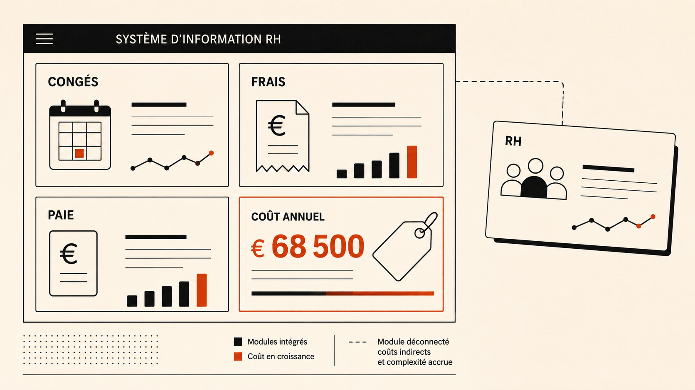

What Lucca's Pricing Page Promises, and What Its Reviews Remember
Lucca's modular pricing is a genuine point of difference in a category trained to expect bloated suites. The reviews show what happens once a buyer starts actually choosing modules.

I found Lucca through their homepage, where the pitch is simple: pick the modules you need, skip the rest, stop paying for software you'll never open. Smart positioning. French HR software has spent years training buyers to expect bloated all-in-one suites, so "pay only for what you use" is a real point of difference in a market where Lucca has been operating for over twenty years and serves more than 7,800 clients across 130 countries. I wanted to know if that pitch held up once you got past the homepage and into what people who'd actually bought the thing said about it. It is the same question I keep coming back to in how platform economics plays out once a product scales past its pitch: the moat that looks clean in a deck is rarely the moat that survives contact with real usage.
Mostly it does. But there's one thing reviewers keep saying that the marketing never mentions, and it's worth slowing down on.
The Pricing Pitch, Tested Against the Reviews
A Capterra reviewer wrote that costs can climb fast once you start adding modules you don't really need. Another named the package system itself, the exact thing being sold as the advantage, as the worst part of using the product. Same idea, two different moments: pitched as a strength before the sale, lived as a complaint after it.
Review - Capterra
Costs can climb fast once you start adding modules you don't really need.
Two Products Talking to Two Different People
Lucca is also, functionally, two products talking to two different people. The website greets a buyer with cost language: reduce the tasks that cost you money, build the HR environment that fits your needs. That's a pitch aimed at whoever has to justify this purchase to a finance director. The app store listing drops all of that. It talks about supporting your daily working life, your HR tasks at your fingertips. No cost framing, no builder language, just reassurance for an employee who didn't choose this software and might not love using it.
You can see that second audience again in the five screenshots Lucca chose for its app store page: check your leave balance, book time off, log your hours, expense a receipt, look up a payslip. None of these happen daily. None are complicated once you're in the app. What they share is that they're the handful of moments an employee actually worries about: am I getting paid right, is my leave actually booked, did that expense go through. That's a deliberate choice about what to put in front of a skeptical user, and it's a smart one.
Squeezed from Both Ends: the Competitive Reality
The modularity pitch that built Lucca over twenty years is now being flanked from two directions at once. Lucca sits in a defined sweet spot, companies of 50 to 5,000 employees that need structured HR processes but aren't large enough to justify an enterprise-grade SIRH. The problem is that this sweet spot is increasingly competitive on both sides.
On the smaller end, PayFit and Factorial offer tighter, more predictable all-in-one pricing that removes the module selection anxiety entirely. On the larger end, Personio and Cegid Talentsoft serve companies that have outgrown Lucca's depth on talent management and complex payroll rules. The four direct named competitors in the French PME/ETI SIRH market, Factorial, Personio, Eurécia, and BambooHR, each win on at least one criterion that Lucca either doesn't lead on or actively struggles with.
None of this means Lucca is losing. Their reputation for UI quality and module coherence remains genuinely strong, and one independent 2026 review rated Poplee Entretiens and Figgo as the best products in their category in France without a real competitor at the same level. But "the incumbent with a solid reputation" and "the incumbent under competitive pressure from both ends" can both be true at the same time.
Where the Modularity Pitch Meets Its Own Reviews
Here's where the pricing complaint becomes more than a grumble. Lucca's own argument for its modularity is that the pieces talk to each other, absences checked automatically against expense notes, nothing siloed the way a stitched-together toolkit would be. Real claim, well made. But a Trustpilot reviewer describes the opposite experience: an account executive promised full payroll integration during the sales process, and the customer spent months manually exporting CSV files because the integration didn't work the way it had been pitched.
Review - Trustpilot
Promised full payroll integration during the sales process. Months of manual CSV exports followed.
Same pattern on the expense side. Cleemy's receipt scanner is supposed to remove manual work. One manager described it flagging expenses as errors whenever they fell on a non-working day, even for teams that travel on weekends as part of the job. A feature sold as effortless was generating its own monthly cleanup task.
Review - Verified User
The OCR flags weekend expenses as errors, even for teams that travel as part of the job.
The Acquisition Gap, Tested Directly
The same tension shows up one stage earlier in the funnel, before anyone has even signed. Lucca's own published process requires a consultant to accompany each prospect through module selection after a demo request. I submitted that demo request and received no follow-up. No confirmation email arrived, no consultant reached out, no redirect to alternative resources.
Observed acquisition flow
Lucca is clear in its positioning that the product is designed for companies with 50 or more employees, and deployment of a single module typically takes 2 to 4 weeks with Lucca's accompanying support. A prospect who does not fit that profile would logically receive lower priority in the follow-up queue. That is a rational sales triage decision. The gap is not the triage itself, it is that the triage is invisible. There is no upfront indication of the company size this process is designed for, no automated confirmation that sets expectations, and no alternative path for a prospect who falls outside the target segment. The result is a prospect who invested time, submitted their details, and received silence. For anyone evaluating HR tools in a competitive shortlist, the natural response is to move to the next tab.
Operator read: None of this breaks the product. Lucca's reputation for being easy to use holds up everywhere I looked, and it's earned. What the pricing complaints, the integration gap, the OCR errors, and the acquisition silence all share is a sales motion that runs slightly ahead of what gets delivered at the point of contact. The fix is not abandoning modular pricing, which is a genuine and defensible position in this market. It is making the implicit visible: show a prospective buyer what a company their size typically ends up paying across a given module combination, and add a confirmation step to the demo request flow that sets expectations on timeline and next steps before a consultant follows up. These two changes would address the most common post-sale regret and the most avoidable pre-sale friction at the same time. This is the same due-diligence logic behind the distribution economics test in the Africa IC Checklist: the gap between what a sales motion promises and what a product delivers at contact is exactly where risk hides, whether the market is French HR software or African fintech infrastructure.
What I Did Not Verify
The exact onboarding step count for a qualified prospect completing a full demo and multi-module activation flow remains unverified from publicly available material. The acquisition experience described above reflects one demo request submission and cannot be taken as representative of the full consultant-led journey for a company in Lucca's target segment of 50 to 5,000 employees.
- Capterra - Lucca reviews
- Trustpilot - Lucca reviews
- Lucca - pricing and product pages
- Meilleur Logiciel RH - Lucca 2026 independent review
- La Fabrique du Net - Alternatives to Lucca
- Impli - Avis Lucca 2026, process d'inscription et deploiement
- Apogea - Avis Lucca integrateur certifie, March 2026